0. Cover Page
Software Requirements Specification
for
E-Learning and Student Cohoet
Version 1.0.1
| Name | ID |
| Md Kawser Ahmad | 1722103042 |
| Musfique-us-Salehin Arnob | 1813020642 |
| Zarrin Muskan | 2014288042 |
| Mohammed Ashraful Islam Chowdhury | 2014318642 |
CSE327 Section-2
Project: E-learning and Student Cohert
Date: October 29, 2022
1. Introduction
1.1 Purpose
“E-learning” system is a platform where teachers analyzes the students’ performances through taking a quiz online. This platform enables the teachers to practically distinguish the class performances and the difficulty of the quizzes through a histogram statistics. This system ensures the exams are taken fairly and within the given time maintaining standard conditions for an exam.
1.2 Document Convention
The SRS document contains standard use of words with paragraphs containing headers, sub-headers and table formation along with attached screenshots.
1.3 Intended Audience and Reading Suggestions
The primary intended audience of this SRS document are the project team members and our course instructor. This document is simply organized for any software developers or technology related people to understand it easily.
1.4 Product Scope
The platform enables the teachers and students to interact virtually through a website where they can login using their personal Gmail account. Also, there is an app for this system where the students can give exam and the teachers can report and view it as well. The goal for this system is to let any institution take online examination if there is any pandemic or any natural occurances.Also,maintaing the standard procedures of taking an exam like scanning the face of a student, timer countdown, eye movement tracking and using Gmail accounts which ensures fair examination policies and evading any unfair advantages of taking the examination by any other means.Also,the android app support will allow the students and teachers to interact if they are unable to use the website for any cause so they can directly interact the platform using their smartphones.
1.5 References
https://medium.com/geekculture/how-to-use-cohorts-in-your-software-ed642f19574
2. Overall Description
2.1 Product Perspective
The idea of this system is inspired from the previous area-wise lockdown enforced all over Bangladesh as a counter measure to the pandemic. The idea of this system is a combination of both google classroom and google meet together but in a more advanced way with a lot more features and security. The idea of this system is mostly designed for education purposes. This system tries to conduct the best online exams, as it has many features for the teachers to conduct a fair exam. This system is mostly useful for institutions like school or private classes or even home tutoring
2.2 Product Functions
The major features of the system are as follows:
- Register as Teacher or Student using google mail.
- Login and Logout
- Face detection feature
- Automated Marking system
- Attendance system
- Makes statistics of students
System:
- Teachers can post study materials for the students to view only and sit for exams.
- Teachers can conduct exams online
- Teachers can watch students during exam using eye detection
- Teachers can evaluate students and see student cohorts and also view their performance.
- A mobile app for the teachers to check notifications
Teachers:
- Students can attend quiz( MCQ, Text answer, Voice).
- Students can only view Study materials or question during the quiz where the pages will be divided into sub page level.
- Start time and End time feature.
Students:
2.3 User Classes and Characteristics
As this system is totally based on online teaching and learning, this system targets the education management like any institution, private coaching or even home tutoring, where the teachers and the students are the ones to interact with our systems’ website.
Based on technical expertise:
| User class | Characteristic | Example |
|---|---|---|
| Teachers | Can post materials for the students to view only and conduct exams and also see the statistics of the student’s performance. |
|
| Student | Can view the questions only and sit for the exam after completing all the verification process. |
|
Initially the app/website will ask if the user is a student or a teacher? And then they will sign in with their respective emails.
2.4 Operating Environments
Android App:
- Device Hardware –
- “Android compatible” device.[1]
- Operating System – Android 5.1 (Lolipop) or above.
- Software Component – Google Play Services, Sinch Android SDK.
Website: Any browser that runs html, css and javascript.
2.5 Design and Implementation Constraints
- Students’ legitimacy is a concern, since anyone can sit for the quiz, though there is face and ID verification.
- Online exams might be unfair or unreliable, though their will be eye detection for the teachers to monitor the students’.
- Users bad webcam and speaker quality can hamper teachers monitoring during exam or hard for face recognition.
- The basic (free) version API/SDKs, database, hosting service that are used allow a threshold amount of usage. It is important to note that their functionalities are essential for the system.
- Since the Android OS is open source, it’s implementation differs from manufacturer to manufacturer. Certain features of our app may not function smoothly due to restrictions put in the OS implementation
- The App/website requires user permission for working with components like- fetching location, microphone-speaker access, camera access etc.
- The core features require continuous active internet connection.
- The basic use of this system is only education purpose where the teachers and their students are the only users
2.6 User Documentation
A demo video of the app and website usage will be available to the users. No documented manual is to be provided.
2.7 Assumptions and Dependencies
Assumptions:
- Teachers and Students phones have working camera/webcam, microphone, speaker and/or headphone/earphone connectivity.
- Each user needs their own google accounts.
- Each user needs to give access to all system requirements.
Dependencies:
- Users need to have google play services installed on their android phones.
3. External Interface
3.1 User Interfaces
The UI of the app is designed in such a way that any cohort/sub-cohort can interact with the application comfortably. When the cohort/sub-cohort launches the app for the first time, the landing page welcomes the cohort/sub-cohort with "Sign Up (Get Started)" or "Sign In" option.
The "Sign In" option will land the cohort/sub-cohort to the "Login" page where existing cohort/sub-cohort can use their credentials (e.g., email and password) to log in.
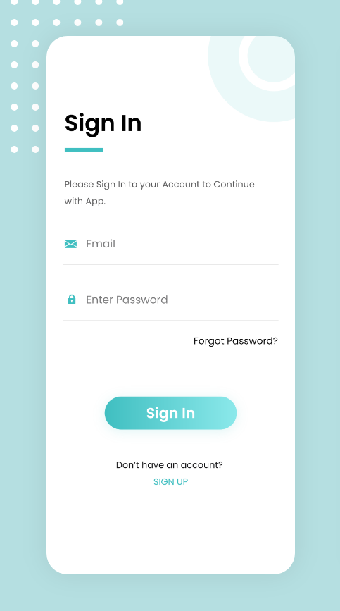For the new cohort/sub-cohort, the "Sign Up" option will take them to a page where they have to enter their email and password to create their account.
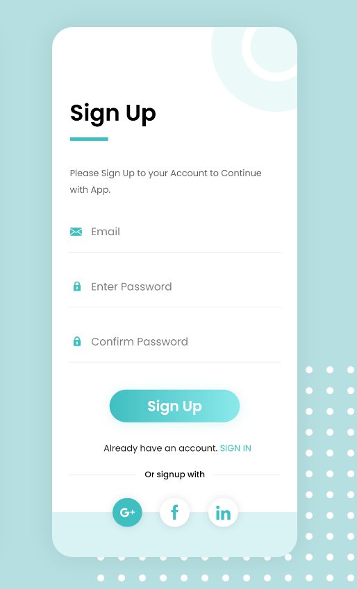After the successful verification, the cohort/sub-cohort must have to set their profile by providing necessary information in the "Setup Profile" page (Example: picture for sub-cohort).
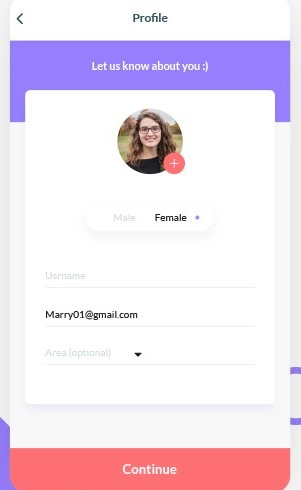Completing a successful setup will redirect the cohort/sub-cohort to the internal system Page.
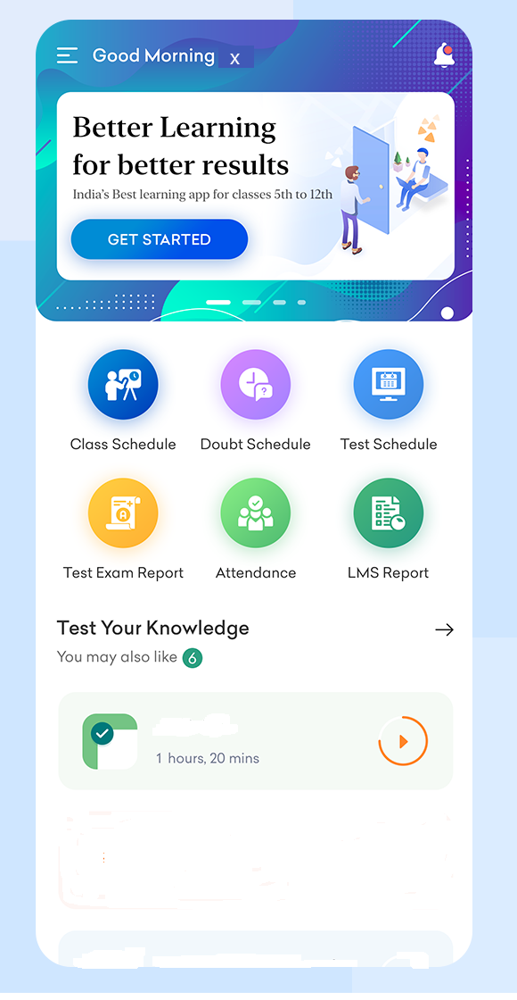Now cohort can assign sub-cohort to different sections.
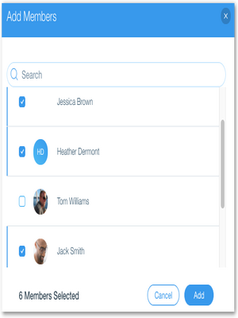Cohort will upload pdf reading materials and which will be non downloadable for sub-cohort.
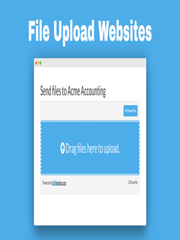The system will divide the reading materials into different sub-part to make the reading easy for the eye of the sub-cohort, and reading materials will be non-downloadable.
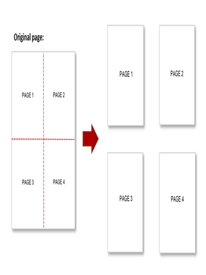Before the sub-cohort start, the reading materials system will check for sub-cohorts so that system can track the reading statistic of reading materials means how much time the sub-cohort reads the materials, not wasting his/her time. To increase the productivity of the sub-cohort and there will be a time limit for every material.
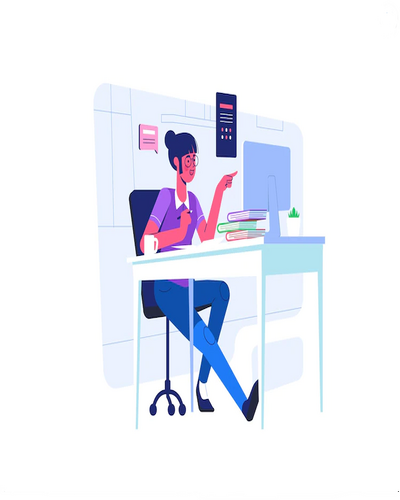After the end of every material, there will be a quiz to test the sub-cohort understanding. The sub-cohort will be able to see the marks of his quiz at the end of the quiz.
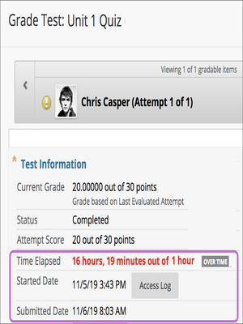On the app interface cohort will be able to see the individual time spent and total time spent on each section of materials by every sub-cohort. Moreover, the cohort will see the percentage of mistakes by sub-cohort in each section and the total percentage of mistakes made by sub-cohorts.
Individual time spending:
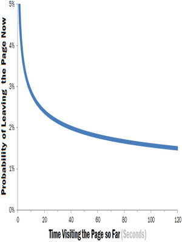Total time spending:
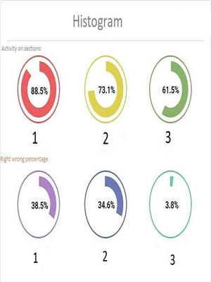Prototype links- E-lerning Web Interface
3.2 Hardware Interfaces
The device that will run the application requires WIFI to read the materials and take the quiz. The device also needs the camera for the sub-cohort to detect the time the sub-cohort reads the materials.
3.3 Software Interfaces
The minimum android operating system version required to run the application is "Lolipop5.1 (API level 22)". The application will work properly on any device with the latest (from android 5.1 to 12) android operating system.
The third-party software components that are going to be used are,
- Migration scripts: A scripts have to run on the database to add the necessary data to run a cohort. This works well for this types of cohorts (static cohorts).
- Pdf splitter api (PDF.co)
- Ageitgey/face_recognition (GitHub Repository)
- Voice to text Recognition API (Google ML kit)
- Java based Android App
- Relational database (user registration)
3.4 Communications Interfaces
Ageitgey/face_recognition is used to detect the face of sub-cohort using internet connections. Voice-to-text Recognition API and pdf splitter API is used for different Purpose.
4. System Features
This section includes the requirements that describe all the essential functions of the system.
4.1 Use Case Diagram


4.2.1 Create an account
Use case name: Create an account
Use case type: Primary.
Actors: Teacher,Student.
Brief Description:Sign up using G-mail account with the app.
| Actor Action | System Response |
|---|---|
| 1. Open the app. | 2. Check if this is the first time. If so, show the sign up page. |
| 3. Select sign up and enter the G-mail account | 4. Show G-mail account entry page. |
| 5. Enter the G-mail account and press verify. | 6. Send verification code in G-mail account and show enter verification code page with a timer. |
| 7. Enter verification code. | 8. Check entered code and then take to the profile. |
| 9. Enter necessary information. | 10. Store all the given information. |
| 11. Then click the sign up button. | 12. Show loading dialog, store all info to database and then show home screen. |
Alternate Course of Action
6.1 User inputs invalid G-mail account, show toast “invalid email” and a red exclamation mark.
8.1 Verification code entry duration times out. Go back to G-mail account entry page.
8.2 Wrong verification code entered. Show toast “invalid code”.
8.3 User attempts to enter wrong verification and/or timer times out a threshold number of times (this is set by the authentication API used). Show error dialog “too many attempts! try again at least 24 hours later” and close the app.
8.4 User doesn’t receive any code in set duration, user requests a resend code. The process is repeated.
11.1 Empty input fields and/or invalid entries. Mark the corresponding input fields in red and show “invalid input” on each field.
4.2.2 Login & Logout
Use case name: Login, logout
Use case type: Primary.
Actors: Teacher,Student.
Brief Description: Login to the app with registered G-mail account and password.
| Actor Action | System Response |
|---|---|
| 1. Open the app. | 2. Check if this is the first time. If not, show login page. |
| 3. Enter email and password. | 4. Check the username and password and then show home page. |
| 5. Pick the dashboard from the menu bar. | 6. Show the dashboard page. |
| 7. Pick Accounts from the menu bar and Logout. | 8. Logout user and show login page again. |
Alternate Course of Action
4.1 Email and passwords don’t match any user registered. Show toast “wrong email and/or password.Check please.” make the input fields border red.
4.2 No internet connection. Show toast “You are not connected to the internet!”.
4.2.3 Authentication Service
Use case name: Authentication Service.
Use case type: Secondary.
Actors: Teacher, Student.
Brief Description: Can view the list of learning materials, student’s cohoets, questions etc.
| Actor Action | System Response |
|---|---|
| 1. Login/Sign-up just completed or User is already logged in and opens the app. | 2. Present the homepage. |
| 3. In the homepage, press on the menu bar. | 4. In the menu bar, it shows the lists of student’s cohorts, assignments etc. |
| 5. Press on the “Student’s Cohorts”. | 6. It shows all the students enrolled for that course. |
| 7. Go back to the home page and logout from account. | 8. User is logged out and shows login page again. |
Alternate Course of Action
(Alternate course of action for Sign-up and Login are the same as mentioned in 4.1, 4.2 these are not repeated here. But to get to this point login or sign up must be completed first.)
None.
4.2.4 App’s Service to Teacher
Use case name: App’s Service to Teacher
Use case type: Secondary
Actors: Teacher.
Brief Description:After login/sign-up, teacher can see the student’s reports, attendance etc and monitor them.
| Actor Action | System Response |
|---|---|
| 1. Login/Sign-up just completed or User is already logged in and opens the app. | 2. Present the home screen and a menu option on top left and search box on top right. |
| 3. Search for a student’s name in the search and box and check student’s report. | 4. Present the student’s report in the screen. |
| 5. Go back to the homepage and logout from account. | 6. Logout user and show login page again. |
Alternate Course of Action
(Alternate course of action for Sign-up and Login are the same as mentioned in 4.1, 4.2 these are not repeated here. But to get to this point login or sign up must be completed first.)
None.
4.2.5 App’s Service to Student
Use case name: App’s Service to Student.
Use case type: Secondary.
Actors: Student.
Brief Description: Upon successful login/signup student can only view and read the documents and also can see the documents while giving the quiz.
| Actor Action | System Response |
|---|---|
| 1. Login/Sign-up just completed or User is already logged in and opens the app. | 2.Show the home page for student. |
| 3. Press “Assignment” tab. | 4. Show the assignments. |
| 5. Read the assignments. | 6. Start time starts and notifies the student. |
| 7. After finish reading tick on “I have finished reading” | 8. End time ends and notifies the student and takes the student to the quiz section. |
| 9. Student takes the quiz. | 10. While the student gives the quiz, the system detects the student’s eyes for how long it starred on the screen. |
| 11. Student then submits the quiz. | 12. After submitting automated markings is done. |
Alternate Course of Action
(Alternate course of action for Sign-up and Login are the same as mentioned in 4.1, 4.2 these are not repeated here. But to get to this point login or sign up must be completed first.)
None.
5. Other Nonfunctional Requirements
5.1 Performance Requirements
For this platform, there is no performance requirements for the website application as it can run in any browsers that can run html, css and JavaScript. The app version can run in any android compatible device with the 5.1 Lolipop version and above. The real time system is designed such a way that there is no delay in time and interaction between the users and the platform. The UI is precise and gives the users a smooth user experience.
5.2 Safety Requirements
There are no safety requirements in this system as this is an E-Learning platform so the system is capable enough to ensure a better user-friendly experience.
5.3 Security Requirements
The users must have to identify themselves while logging in as the system has face detection so any other person impersonating will be detected.Also, they have to login using their personal Gmail accounts to sign in and have to verify their account from their Gmail inbox. For students, the system is designed to eye movements so they have to place the camera in the middle and their face should be eye level in the center of the screen while attending the exam. If they look away from the screen or looking somewhere for a long time will report back to the teachers.
5.4 Software Quality Attributes
It is user friendly and have no maintenance problem whatsoever.
5.5 Business Rules
For the website version,
Students can login using their Gmail account, read the material and attend the exam within a given time. Teachers can observe, analyze,summarize each student activities and also their results and report back.
For app version,
Students can login and attend the quiz and get notifications of starting and ending time.Teachers can only report and navigate it.This system is free for both website and android version which doesn’t require any money for purchasing the service.
6. Other Requirements
One extra requirement of this project is to be inline with the latest technology trends and make sure it is a software worthy of the next era. We have taken global research and advisory firm – GreyCampus website’s predictions as guideline to achieve this:-
According to GreyCampus the leading technologies in the software industries for this era are- AI, ML, Cybersecurity, VR, AR, block-chain, intelligent search features. Their most recent prediction consists of 10 technology trends for the ear 2022 which include- multi- experience, AI security etc. The “E-learning System and Student Cohoet” system somewhat adheres to a few of these predictions in its features. Such as-
- Multi-experience:Using these technology, this platform lets the teacher to monitor their student’s performance and the teacher will know if the student is cheating or not. The system makes easier for the teacher to catch the student who is cheating.
- AI: The system uses google play services.
Appendix A: Glossary
| Term | Definition |
|---|---|
| System | The whole platform consisting of app and website. |
| Teacher | A person who teaches and monitor its student and evaluate them accordingly. |
| Student-Cohoets | A group of person who is studying and do its assignments assigned by its respective teachers. |
| Quiz-Statistics | A histogram is drawn where it shows the performance of the students. |
| Reading Activity Report | Teacher can see these in the navigation bar where it will show the reports of each students. |